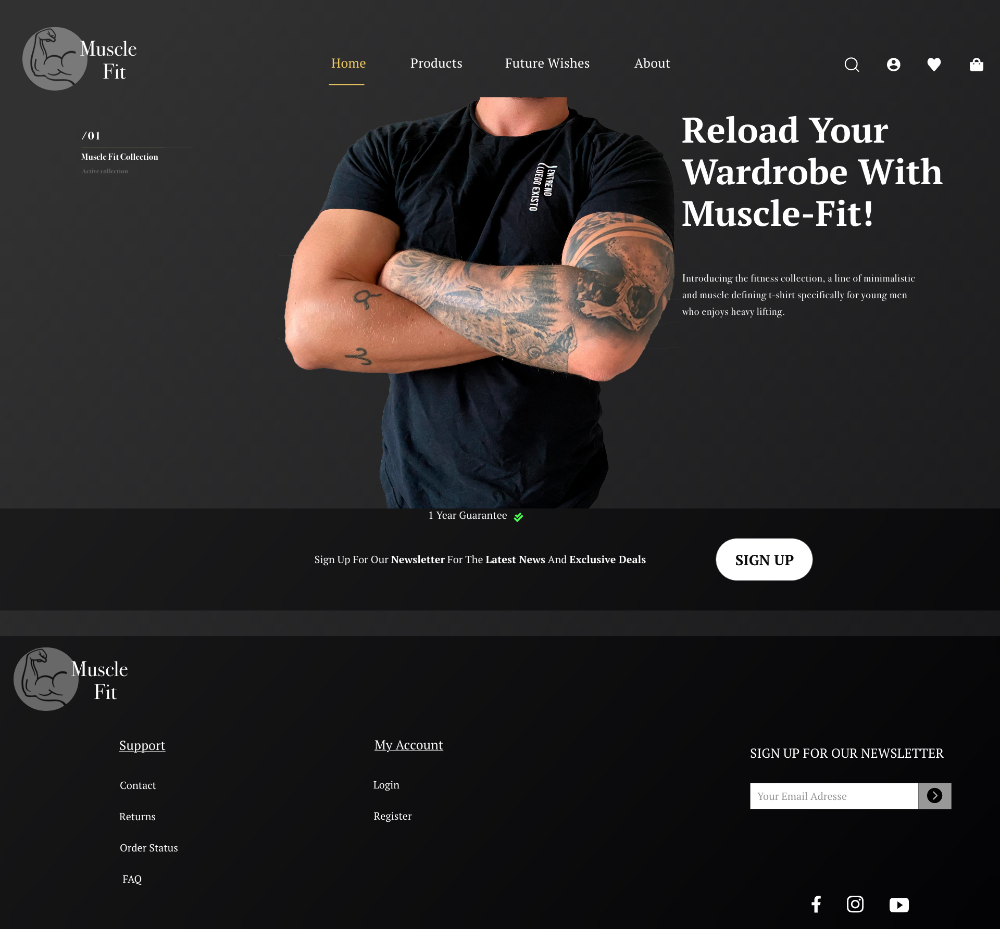

Grundlæggende UX

03.01.05 Idé
På baggrund af min research, behandlingen af den og de indsigter, som jeg var kommede frem til, skulle jeg lave et udkast til en idé til at løse casens problemstilling. Jeg lavede en solution sketch som var min ide til den endelig prototype.

03.03.02 Endelig prototype
Ud fra min ide og endelige skitse lavede jeg en prototype i Adobe XD. Ideen bag prototypen var at vise den grundlæggende struktur og navigation af min idé til en løsning. Her gjorde jeg også brug af UI Kits, UI Patterns, samt transitions.
Wireframe
Tryk knap for at se fulde wireframe af "Prototype 1" med transitions.
Endelig Prototype:
Herfra arbejdede jeg videre med min første prototype hvor jeg indarbejde den visuelle stil, som jeg lagde fast i mit styletile. Samt tog mine egne billeder til protoypen, for at få det jeg præcis ville have. Jeg implementerede copy og microcopy i min endelig løsning.
Prototype
Tryk knap for at se den endelig prototype
03.03.03 Pitch
Nedenunder kan du se procesdokumentet: